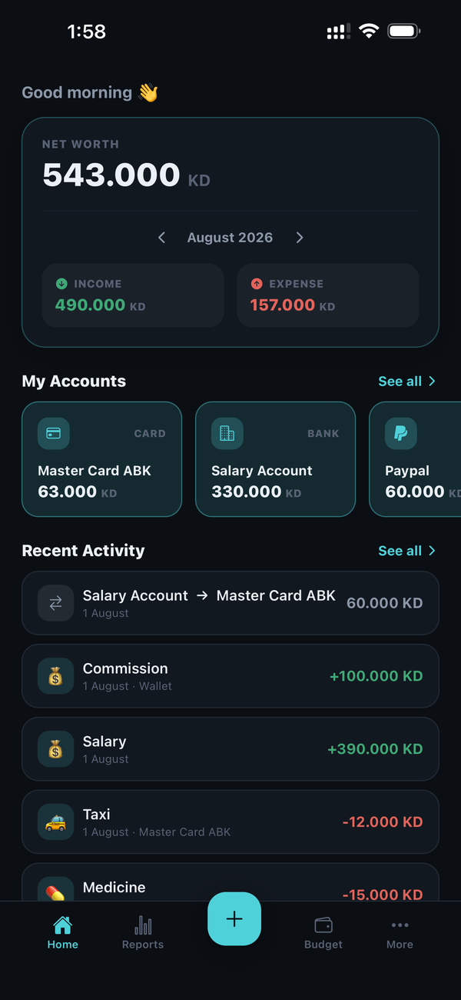

Sparings
A simple, private way to track your money — manage expenses, accounts and budgets that stay fully on your device, with no internet connection required.
●100% offline
●No data collection
●Free
